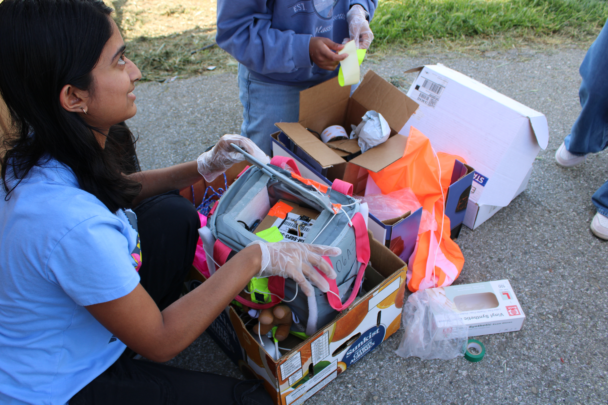
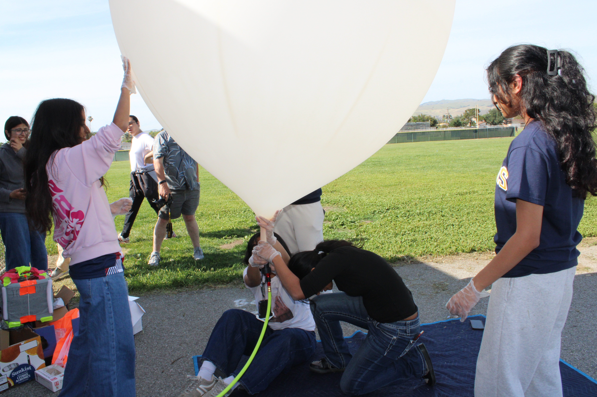

01
SOFTWARE · EMBEDDED SYSTEMS · ENGINEERING
High-Altitude BalloonSat
Software Mission Lead
Led software development for a high-altitude balloon mission designed to investigate the relationship between ozone and UV levels throughout different levels of the stratosphere.
I worked on software for the ozone, UV, and altitude sensors and helped integrate GPS, LoRa communication, a camera, and flight data logging. Our team successfully launched the balloon and collected telemetry and images throughout the flight.